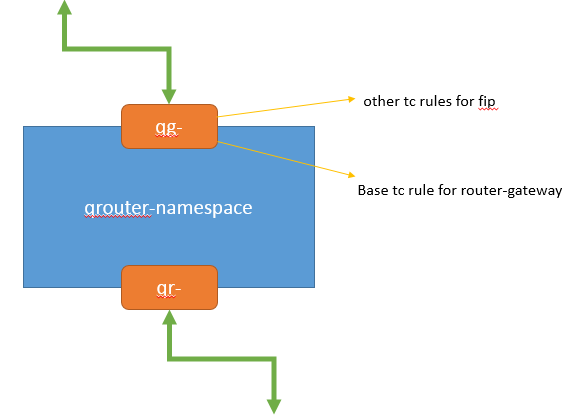
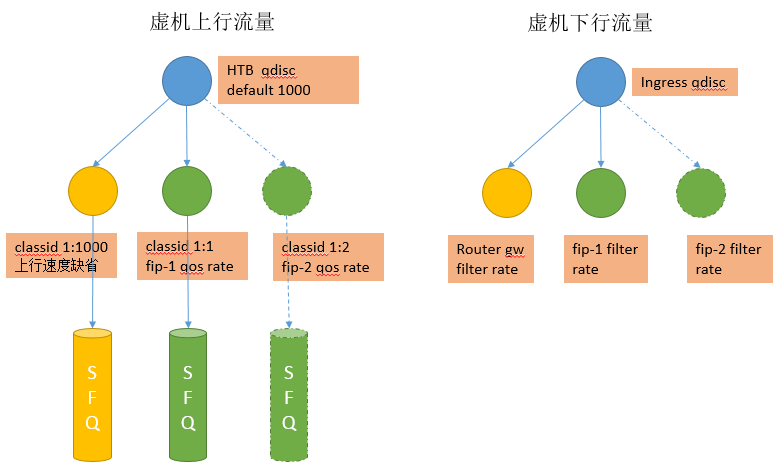

在L版的ReleaseNotes里面我们看到neutron已经支持了 ml2-qos 特性， 这个特性可以让我们针对l2-port和l2-net做流量qos设置， 这是一个非常实用的特性，在之前的版本中，对于虚机网络流量qos，我们只能通过flavor来去设置qos， flavor-qos不是很灵活，这会让我去维护很多个flavor来保证不同的qos需求。
但是ml2-qos只能做二层网络的流量限制，对于floating-ip级别的并不能生效，而且ml2-qos依托于OpenVswitch本身的特性， 且OpenVswitch的qos只能设置单向流量（虚机上行流量）。
我们还是需要一个l3-qos，来实现针对floating-ip和router设置qos，且能够设置上行和下行流量。
在Linux系统上，无论去使用怎样的工具，本质上都要使用TC来做流量控制。 如上面所说，针对floating-ip和router的qos设置，我们必须让TC规则作用在对应的net-namespace上:
使用HTB来控制虚机的上行流量，使用Ingress来控制虚机的下行流量：
此处需要注意的是，TC的版本不能太低，否则TC不能支持在namespace下设置规则，如果你是ubuntu系统， 建议至少使用这个版本iproute2_4.1.1-1ubuntu1_amd64。
实现原理请参考这个脚本:
#!/bin/bash
#
# kb or k: Kilobytes
# mb or m: Megabytes
# mbit: Megabits
# kbit: Kilobits
# To get the byte figure from bits, divide the number by 8 bit
#
# ex: tc_htb.sh restart qg-f5f0ed64-84 qrouter-d5b5b595-9ae2-49e9-8fd9-6ddbf6195702
#
TC=/sbin/tc
if [ -n "$3" ]; then
TC="/sbin/tc -n $3" #tc utility, iproute2-ss150706
fi
IF=$2 # Interface
UPLD=1mbit # VM UPLOAD Limit
DEF_UPLD=2mbit # VM UPLOAD Limit
DNLD=10mbit # VM DOWNLOAD Limit
DEF_DNLD=20mbit # VM DOWNLOAD Limit
IP=192.168.252.168 # VM IP
GW_IP=192.168.252.141 # Router GW IP
HTB_U32="$TC filter add dev $IF protocol all parent 1: prio 1 u32"
INGRESS_U32="$TC filter add dev $IF protocol all parent ffff:"
start() {
# UPLOAD TRAFFIC
$TC qdisc add dev $IF root handle 1: htb default 1000
$TC class add dev $IF parent 1: classid 1:1000 htb rate $DEF_UPLD #burst 100kb
$TC qdisc add dev $IF parent 1:1000 handle 1001: sfq perturb 10
$TC class add dev $IF parent 1: classid 1:1 htb rate $UPLD #burst 100kb
$TC qdisc add dev $IF parent 1:1 handle 2: sfq perturb 10
$HTB_U32 match ip src $IP/32 flowid 1:1
# DOWNLOAD TRAFFIC
$TC qdisc add dev $IF ingress
$INGRESS_U32 prio 1 u32 match ip dst $GW_IP/32 police rate $DEF_DNLD burst 512kb mtu 64kb drop flowid :1
$INGRESS_U32 prio 2 u32 match ip dst $IP/32 police rate $DNLD burst 256kb mtu 64kb drop flowid :1
}
rm() {
$TC qdisc del dev $IF parent 1:1
$TC filter del dev $IF protocol all parent 1: prio 1
$TC class del dev $IF parent 1: classid 1:1
$TC filter del dev $IF protocol all parent ffff: prio 2
}
stop() {
$TC qdisc del dev $IF root
$TC qdisc del dev $IF ingress
}
restart() {
stop
sleep 1
start
}
show() {
echo '=================================='
$TC -s -d -p qdisc show dev $IF
echo '=================================='
echo -e '\n'
echo '=================================='
$TC class show dev $IF
echo '=================================='
echo -e '\n'
echo '=================================='
$TC -s -d -p filter show dev $IF
echo '----------------------------------'
$TC filter show dev $IF parent ffff:
echo '=================================='
}
case "$1" in
start)
echo -n "Starting bandwidth shaping: "
start
echo "done"
;;
stop)
echo -n "Stopping bandwidth shaping: "
stop
echo "done"
;;
restart)
echo -n "Restarting bandwidth shaping: "
restart
echo "done"
;;
rm)
echo -n "Rm bandwidth shaping: "
rm
echo "done"
;;
show)
echo "Bandwidth shaping status for $IF:"
show
echo ""
;;
*)
pwd=$(pwd)
echo "Usage: $(/usr/bin/dirname $pwd)/tc.bash {start|stop|restart|show}"
;;
esac
exit 0
将上面的实现原理整合到自己维护的neutron源码中。
除了在底层支持l3-qos外，还需要在neutron-api层面支持设置具体属性值， 比如创建一个具有带宽限制的router或者floatingip:
$ neutron router-create aaaa --ha True --ingress_rate 14mbit --ingress_burst 512kb --egress_rate 12mbit --egress_burst 512kb
Created a new router:
+-----------------------+--------------------------------------------------------------------------------------------------------+
| Field | Value |
+-----------------------+--------------------------------------------------------------------------------------------------------+
| admin_state_up | True |
| bandwidth | {"ingress_rate": "14mbit", "egress_rate": "12mbit", "egress_burst": "512kb", "ingress_burst": "512kb"} |
| distributed | False |
| external_gateway_info | |
| ha | True |
| id | d2e8813a-6619-4784-a08a-2a2725fe2fb5 |
| name | aaaa |
| routes | |
| status | ACTIVE |
| tenant_id | 5e30ecc3c3434f24aa56801467ef1688 |
+-----------------------+--------------------------------------------------------------------------------------------------------+
$ neutron floatingip-create <ext-net> --egress_rate 5mbit --egress_burst 150kb
Created a new floatingip:
+---------------------+---------------------------------------------------+
| Field | Value |
+---------------------+---------------------------------------------------+
| bandwidth | {"egress_rate": "5mbit", "egress_burst": "150kb"} |
| fixed_ip_address | |
| floating_ip_address | 192.168.252.161 |
| floating_network_id | 9946adcc-041e-4c0f-91b6-96a9fb6254c0 |
| id | 432f7dd6-b171-4de1-8e43-8069c42ee5a5 |
| port_id | |
| router_id | |
| status | DOWN |
| tenant_id | 5e30ecc3c3434f24aa56801467ef1688 |
+---------------------+---------------------------------------------------+
修改已有router的带宽规则，并让其生效:
$ neutron router-update <router-id> --admin-state-up False --ingress_rate 8mbit --ingress_burst 256kb
$ neutron router-update <router-id> --admin-state-up True
注意这个过程中，连到这个router的所有机器都会断网
修改已有floatingip的带宽规则，并让其生效:
$ neutron floatingip-disassociate <fip-id> --ingress_rate 7mbit --ingress_burst 256kb
$ neutron floatingip-associate <fip-id> <port-id>
注意这个过程中，floatingip是从解绑到绑定